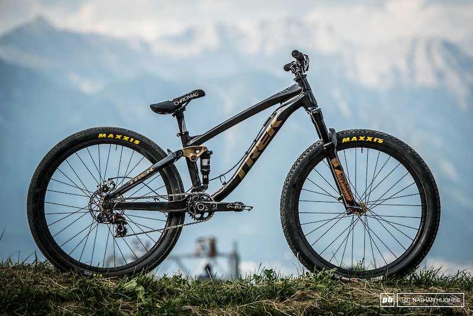

Dirt jumping. Прыжки на трамплинах с выполнением различных трюков в воздухе. Трамплины - дёрты часто строятся из земли, т.е. грязи, отсюда и название (dirt- грязь с английского). Для DJ обычно строятся специализированные площадки, которые представляют собой набор или переплетение серий дёртов (серия- полоса трамплинов, стоящих друг за другом, иногда, если место ограничено или просто хочется добавить техники между трамплинами, строятся контруклоны).
Slopstyle. Трюковое катание по специальным трассам включающим в себя не только серии из землняных трамплинов, но и днеревянные конструкции (степдауны, степапы), бонерлоги (деревянный трамплин без радиуса), хипы, открытие петли, закрытые петли и т.д. Как правило пролёты между трамплинами и приземлениями больше.
Примеры велосипедов для данных дисциплин:

